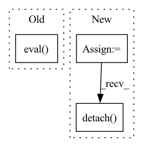

Pattern ID :18744

Before Change
def test_iter(self, metrics=None):
self.synthesis_ema.eval()
self.mapping_ema.eval()
z = self.input["z"]
class_idx = None
After Change
img = self.synthesis_ema(ws, noise_mode=noise_mode)
img = img.permute((0, 2, 3, 1)) * 127.5 + 128
img = img.clamp(0, 255)
img = img.to(torch.uint8)
img_rgb = img.cpu().detach().numpy()[0]
img_bgr = img_rgb[:, :, [2, 1, 0]]
return img_bgr
In pattern: SUPERPATTERN
Frequency: 3
Non-data size: 3
Instances
Fragment ID: 60962690
Project Name: miemie2013/miemiegan
Commit Name: c0604d858d8916f0f711432810ad1ec98036ca4b
Time: 2022-02-22
Author: 53960695+miemie2013@users.noreply.github.com
File Name: mmgan/models/architectures/styleganv2ada_model.py
M Class Name: StyleGANv2ADAModel
N Class Name: StyleGANv2ADAModel
M Method Name: test_iter(2)
N Method Name: test_iter(2)
M Parent Class: torch.nn.Module
N Parent Class: torch.nn.Module
M File Name: mmgan/models/architectures/styleganv2ada_model.py
N File Name: mmgan/models/architectures/styleganv2ada_model.py
M Start Line: 458
M End Line: 486
N Start Line: 474
N End Line: 481
'>
Before Change
_, sr = sf.read(path_list[0])
if speaker_embedding:
wav2mel = torch.jit.load("Models/SpeakerEmbedding/wav2mel.pt")
dvector = torch.jit.load("Models/SpeakerEmbedding/dvector-step250000.pt").eval()
ap = AudioPreprocessor(input_sr=sr, output_sr=16000, melspec_buckets=80, hop_length=256, n_fft=1024, cut_silence=cut_silences)
for path in tqdm(path_list):
transcript = self.path_to_transcript_dict[path]
wave, sr = sf.read(path)
After Change
transcript = self.path_to_transcript_dict[path]
wave, sr = sf.read(path)
if min_len <= len(wave) / sr <= max_len:
norm_wave = ap.audio_to_wave_tensor(normalize=True, audio=wave)
cached_text = tf.string_to_tensor(transcript).squeeze(0).cpu().numpy()
cached_text_len = torch.LongTensor([len(cached_text)]).numpy()
cached_speech = ap.audio_to_mel_spec_tensor(audio=norm_wave, normalize=False).transpose(0, 1).cpu().numpy()
cached_speech_len = torch.LongTensor([len(cached_speech)]).numpy()
if speaker_embedding:
cached_speaker_embedding = speaker_embedding_function.encode_batch(norm_wave).squeeze(0).squeeze(0).detach().cpu().numpy()
process_internal_dataset_chunk.append([cached_text,
cached_text_len,
cached_speech,
'>
Fragment ID: 60962688
Project Name: digitalphonetics/ims-toucan
Commit Name: 4705928bf2e8184d5b2bb1ef9dcc7213e398026d
Time: 2021-09-13
Author: florian.lux@ims.uni-stuttgart.de
File Name: TrainingInterfaces/Text_to_Spectrogram/Tacotron2/TacotronDataset.py
M Class Name: TacotronDataset
N Class Name: TacotronDataset
M Method Name: cache_builder_process(7)
N Method Name: cache_builder_process(7)
M Parent Class: Dataset
N Parent Class: Dataset
M File Name: TrainingInterfaces/Text_to_Spectrogram/Tacotron2/TacotronDataset.py
N File Name: TrainingInterfaces/Text_to_Spectrogram/Tacotron2/TacotronDataset.py
M Start Line: 83
M End Line: 98
N Start Line: 83
N End Line: 96
'>
Before Change
def get_outputs(self, args, dataloader, model):
model.eval()
total_labels = torch.empty(0,dtype=torch.long).to(self.device)
total_preds = torch.empty(0,dtype=torch.long).to(self.device)
total_features = torch.empty((0,args.feat_dim)).to(self.device)
After Change
self.model.eval()
total_labels = torch.empty(0, dtype=torch.long).to(self.device)
total_logits = torch.empty((0, args.num_labels)).to(self.device)
total_features = torch.empty((0, args.feat_dim)).to(self.device)
total_preds = torch.empty(0, dtype=torch.long).to(self.device)
for batch in tqdm(dataloader, desc="Iteration"):
batch = tuple(t.to(self.device) for t in batch)
input_ids, input_mask, segment_ids, label_ids = batch
with torch.set_grad_enabled(False):
features, logits = self.model(input_ids, segment_ids, input_mask)
total_labels = torch.cat((total_labels, label_ids))
total_logits = torch.cat((total_logits, logits))
total_features = torch.cat((total_features, features))
if get_feats:
feats = total_features.cpu().numpy()
return feats
else:
total_probs = F.softmax(total_logits.detach(), dim = 1)
total_maxprobs, total_preds = total_probs.max(dim = 1)
y_true = total_labels.cpu().numpy()
'>
Fragment ID: 60962695
Project Name: thuiar/textoir
Commit Name: 203370e17d2a3452b90670171b60c44cb1500bcd
Time: 2021-08-03
Author: zhang-hl20@mails.tsinghua.edu.cn
File Name: open_intent_discovery/methods/semi_supervised/MCL_BERT/manager.py
M Class Name: MCLManager
N Class Name: MCLManager
M Method Name: get_outputs(4)
N Method Name: get_outputs(4)
M Parent Class:
N Parent Class:
M File Name: open_intent_discovery/methods/semi_supervised/MCL_BERT/manager.py
N File Name: open_intent_discovery/methods/semi_supervised/MCL_BERT/manager.py
M Start Line: 20
M End Line: 40
N Start Line: 93
N End Line: 130